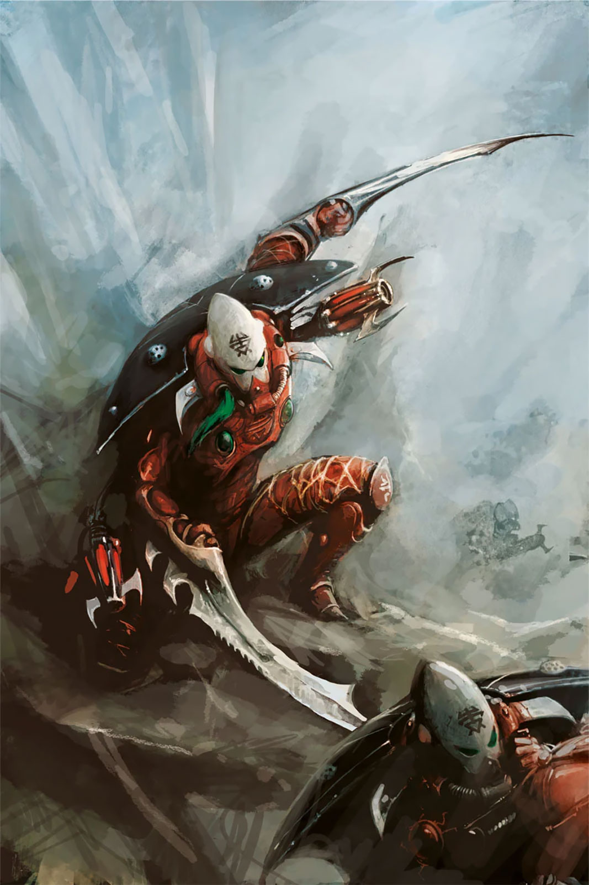
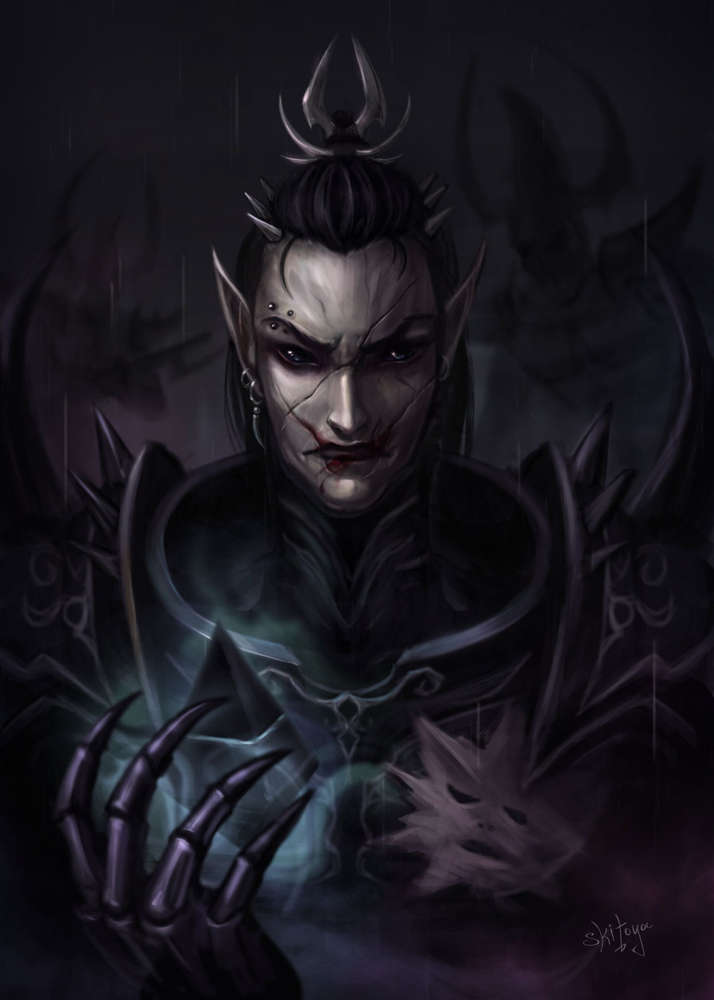

AELDARI: OS ASURYANI (MUNDOS-OFÍCIO)
AELDARI: OS DRUKHARI (COMMORRAGH)
Nós somos os Aeldari, Asuryanis. Somos os legítimos herdeiros de uma espécie ancestral e outrora dominante que governava as estrelas muito antes de as raças inferiores saírem das cavernas. Biologicamente, somos a mesma raça que os nossos parentes sombrios, os Drukhari; compartilhamos o mesmo sangue, a mesma mente psíquica hiperavançada e o mesmo destino atado ao cosmos. No entanto, o que nos separa é uma linha intransponível de ideologia e sobrevivência. Enquanto eles escolheram o caminho da depravação que destruiu nossa antiga civilização, nós escolhemos o caminho da contenção, da disciplina e da sabedoria para salvar o que restou do nosso povo.
Nós somos os sobreviventes que previram o grande cataclismo cósmico. Antes que o nosso antigo império desmoronasse, nós fugimos a bordo dos Mundos-Ofício (Craftworlds) — colossais naves-continente feitas de circuito espectral e osso medular que agora vagam pelo vazio do espaço. Para não alimentarmos o Deus do Caos com as nossas emoções intensas, nós organizamos as nossas vidas através das Sendas (Paths). Cada Asuryani dedica séculos de sua existência a dominar uma única disciplina com perfeição absoluta: seja a Senda do Guerreiro Aspeto, canalizando a fúria em táticas de combate cirúrgicas; a Senda do Artífice, moldando a realidade; ou a Senda do Vidente (Farseer), usando poderes psíquicos para ler o tempo e manipular o destino.
O que os Asuryani querem no universo de Warhammer? Nós queremos a sobrevivência a qualquer custo e a preservação do futuro da nossa espécie. Nós olhamos para a galáxia atual e vemos um tabuleiro de xadrez onde os humanos e outras raças agem como peões ignorantes. Para nós, a galáxia é um destino fragmentado que precisamos guiar sutilmente através de visões e ataques de precisão. Se para salvar um único Mundo-Ofício ou uma única alma Aeldari nós precisarmos condenar um sistema inteiro de outras raças à destruição, nós o faremos sem hesitar. Nós jogamos o jogo longo.
Nós somos os Aeldari, Drukharis. Somos os verdadeiros mestres da galáxia, governando a partir das sombras da teia espacial na mítica cidade sombria de Commorragh. Biologicamente, somos a mesma raça que os nossos parentes covardes, os Asuryani; compartilhamos o mesmo sangue arrogante, a mesma longevidade e os mesmos sentidos aguçados ao extremo. No entanto, nossa ideologia e nossa ideia para a galáxia são totalmente opostas. Enquanto os Asuryani se escondem atrás de regras rígidas e medo, nós abraçamos a nossa verdadeira natureza de predadores. Nós não fugimos do colapso; nós nos adaptamos a ele e transformamos a galáxia no nosso parquinho de diversões pessoal.
Nós somos os herdeiros diretos da aristocracia decadente que quase extinguiu a nossa raça. Para evitar que a nossa alma seja consumida pelo Caos, nós descobrimos uma cura perfeita: o sofrimento alheio. Ao infligir dor, terror e agonia física em outras criaturas, nós rejuvenescemos nossos próprios corpos e mentes, alimentando-nos do desespero dos fracos. Nossa sociedade é uma selva hipercompetitiva governada por Cabalas cruéis, Cultos de Bruxas gladiadoras que desafiam a morte nas arenas, e Haemonculi, os cientistas loucos da carne que moldam monstros biológicos e desafiam a própria mortalidade em seus laboratórios sombrios.
O que os Drukhari querem no universo de Warhammer? Nós queremos o controle absoluto através do medo, a escravização das raças inferiores e o suprimento eterno de dor para saciar nossa fome. Para nós, a galáxia não é algo a ser salvo ou guiado, mas sim um imenso curral cheio de gado esperando para ser colhido em nossos saques piratas. Nós não buscamos construir um império de fronteiras, pois Commorragh já é um império eterno escondido na Disformidade. Nós queremos apenas continuar sendo os predadores definitivos do cosmos, rindo enquanto o restante do universo queima e sangra em nossas mãos.
Galeria dos Escolhidos
Os Predadores de Commorragh

Farseer (Retrato)

Striking Scorpion

Striking Scorpion

Wraithlord

Dire Avenger

Dire Avenger com Exarch

Avatar of Khaine

Fire Prism

Relíquia de Guerra

Lord Asdrubael

Scourge

Archon

Incubus (Arte Vermelha)

Wrack

Haemonculus

Archon (Arte de Luxo)

Aeldari Misto

Sombra de Commorragh
Arsenal: A Sinfonia de Cristal e Mente
Arsenal: A Ciência da Agonia Refinada


O arsenal Asuryani é uma extensão da psique do guerreiro, composto por materiais que respondem
ao comando mental. Como visto em sua mesa de armas:
• Tecnologia Shuriken: Dispara discos monomoleculares em velocidades
hipersônicas, fatiando armaduras com a facilidade de um laser.
• Lanças de Luz e Canhões Estelares: Canalizam o poder das estrelas para
desintegrar alvos no nível atômico.
• Lâminas Rúnicas: Espadas de cristal espiritual que cortam não apenas a
carne, mas a própria essência da alma do inimigo.
O arsenal Drukhari é projetado para torturar. Sua mesa de armas exibe ganchos e venenos cruéis:
• Armas de Estilhaços: Disparam cristais embebidos em neurotoxinas que mantêm a
vítima consciente enquanto seus nervos entram em colapso.
• Garras e Chicotes de Tortura: Ferramentas de metais negros feitas para
rasgar carne com precisão sádica.
• Venenos Exóticos: Fluidos neon que expandem a percepção de tempo da
vítima, fazendo um segundo de agonia parecer uma eternidade.
Defesa: A Armadura da Alma
Defesa: A Armadura de Espinhos


A proteção dos Asuryani foca na agilidade sobrenatural. Sua Mesh Armour é composta por termocristais que endurecem ao impacto, permitindo mobilidade total. Os Capacetes de Aspecto em sua mesa de defesa integram sistemas de mira psíquica, permitindo que o guerreiro preveja o disparo inimigo antes dele ocorrer, transformando o combate em uma dança onde o Aeldari nunca está onde o golpe cai.
A armadura Drukhari é uma moldura para o sadismo. Feita de ligas leves e couros de feras, ela é segmentada com espinhos e ganchos externos, como visto em sua mesa de defesa. Utilizam drogas de combate que transformam a dor em adrenalina pura. Para um Drukhari, a defesa é uma mistura de velocidade acrobática e a crueldade de uma proteção que fere o atacante tanto quanto protege o usuário.
O Legado: O Despertar de Ynnead
O Legado: O Domínio de Commorragh
O objetivo atual dos Asuryani sob o comando de Yvraine é a unificação dos fragmentos da raça Aeldari para enfrentar o caos. Na era da Cruzada Indomitus, eles buscam recuperar as 'Croneswords' (Espadas Ancestrais) e fortalecer o deus Ynnead. O foco é garantir a sobrevivência contra a Frota Colmeia Leviathan enquanto manipulam os eventos da galáxia para que a humanidade e outras raças sirvam de escudo contra o avanço das Trevas, garantindo que o futuro dos Aeldari seja escrito por suas próprias mãos e não pelo destino cruel.
Sob o punho de ferro de Asdrubael Vect, o legado dos Drukhari é a manutenção de sua supremacia e estilo de vida decadente. O objetivo atual é aproveitar o caos da Cicatriz Maligna para lançar incursões de escala sem precedentes em mundos imperiais vulneráveis. Enquanto as outras raças se desgastam em guerras de extermínio, Vect planeja expandir a influência de Commorragh pelas sombras da Teia, garantindo que a agonia da galáxia continue alimentando a eternidade de seu reinado sombrio.